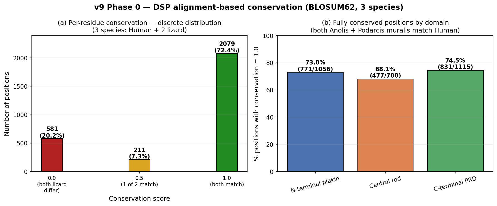
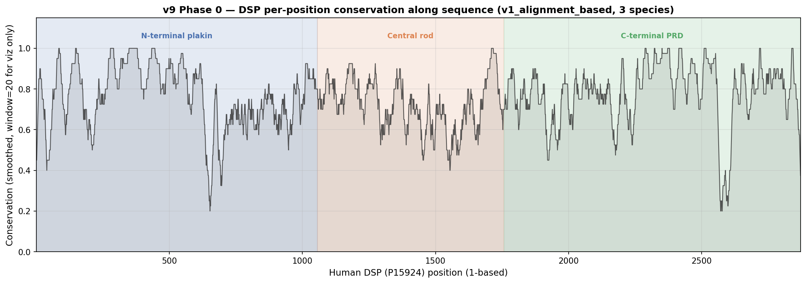
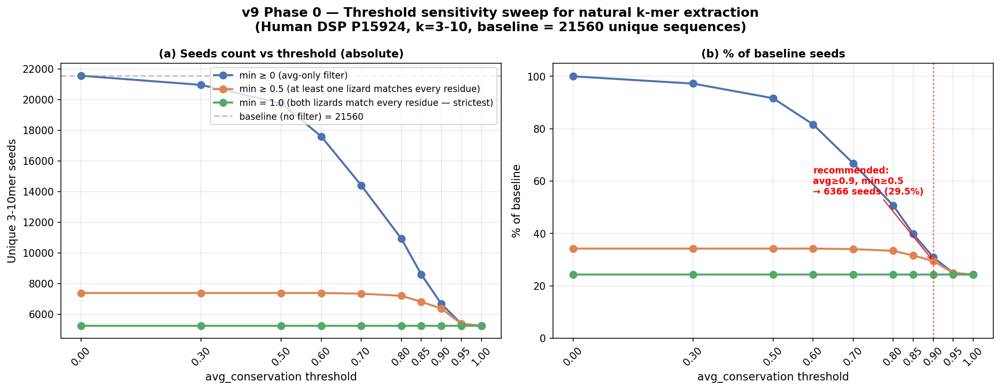
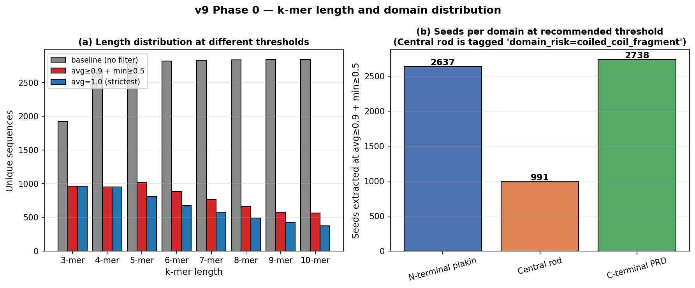
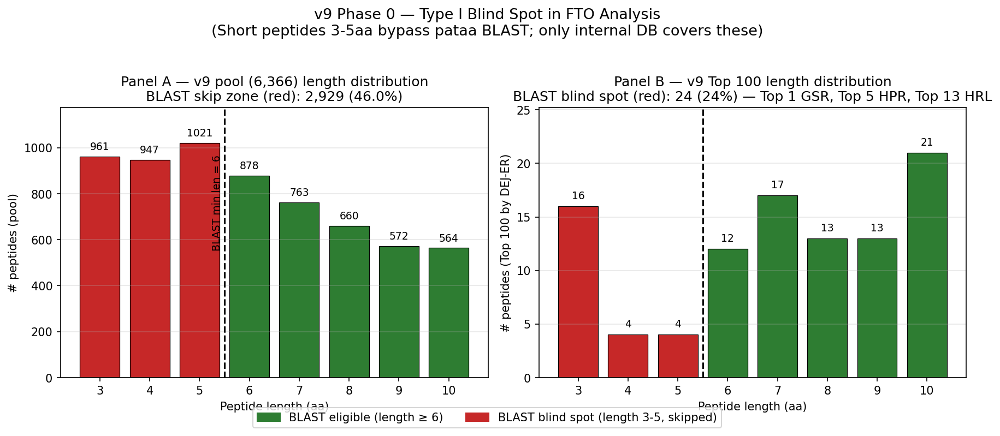

프로젝트: AI-ZPT
요청 대상: 외부 바이오 전문가 (피부과학 / 펩타이드 화학 / IP 전문)
작성일: 2026-04-07
관련 연구 보고서: v9 자연 추출 연구 보고서 (Section 1-9)
선행 연구: v1-v8 (synthetic mutation 기반)
중요: 본 문서의 모든 스코어는 in silico 예측 결과입니다. 실험적 검증 (in vitro/in vivo) 전까지 참고용이며, 최종 후보 선정은 전문가 피드백과 wet-lab 검증 후 결정합니다.
- DEJ_V8 scoring: v8 에서 도입된 9-component scoring scheme. v9 는 동일 scheme 을 자연 펩타이드에 적용 [2].
- DEJ-ER meta ranking: v9 신규 —(0.22·collagen + 0.18·dsp + 0.12·mmp) / 0.52. DEJ triad (52%) 만 추출해 정규화 [14]. DEJ_V8 raw 대비 RK-bias 가 절반 수준 (Pearson r 0.866 → 0.598).
- Grade 2단계 시스템: 1단계 raw score 기반 grade 분류 → 2단계 cosmetic viability 평가 (cationic dominance, residue dominance, protease 등) 후 강등. Score 순위 ≠ Grade 순위 가능 [5].
- v9 pool final grade 분포: A등급 0개, B등급 24개, C등급 769개, F등급 5573개 (전체 6,366 — v9 Phase 0 자연 subset only, DB 전체와 독립).
- 3-mer caveats: v9 Top 1 GSR, Top 5 HPR 은 3-mer. 자유 3-mer 펩타이드는 in vivo aminopeptidase 에 의해 빠르게 분해되며 [7], FusPBESM2 의 training distribution 밖일 가능성 있습니다.
- 최종 후보 선정은 wet-lab 검증 후 결정.
v8 종료 시점에 외부 DSP 전문가로부터 받은 3가지 피드백에 대응하여 v9 를 설계했습니다:
v9 의 대응: 자연 sliding window only (mutation/cross-breed 일체 없음), Human P15924 only (3-10mer 고정), alignment-based conservation map 재구축 [1][2].
Desmoplakin 은 desmosome 의 plaque protein (cell-cell 접착) [1][2] 이며, basement membrane zone (BMZ) / dermal-epidermal junction 의 직접 anchoring 분자가 아닙니다. DEJ 의 직접 구조 단백질은 collagen IV (lamina densa), collagen VII (anchoring fibril), laminin-332, nidogen-1/2, integrin α6β4, BP180 (COL17A1), BP230 등입니다.
본 연구의 "DEJ 관련" 표현은 간접 지지 (basal keratinocyte cytoskeleton 안정화 → 기저막 접착 유지) 를 의미합니다. 피부 노화 맥락의 DEJ 평탄화 [15] 는 핵심 표적이며, DEJ_V8 의 "DEJ triad" 명명은 간접 기여 (Type I collagen 합성 [10], MMP 억제 [3], desmosomal/keratin network 지지) 를 의미합니다.
Wet-lab 설계 시 주의: COL17A1 / laminin-332 직접 결합 assay 는 적합하지 않으며, (a) Type I procollagen ELISA [8], (b) basal keratinocyte adhesion/migration (HaCaT/NHEK), (c) MMP-1/3/9 inhibition zymography [3][8] 를 권장합니다.
| 항목 | 값 |
|---|---|
| 연구 시리즈 | v9 (Natural Extraction Phase 0) |
| 연구 파이프라인 | 1-Phase (자연 sliding window only) |
| Source protein | Human DSP (P15924, 2,871 aa) 단독 |
| 비교종 (conservation 계산용) | Anolis carolinensis (H9G6P9) + Podarcis muralis (A0A670I745), 2종 |
| Conservation map | v1_alignment_based (BioPython PairwiseAligner + BLOSUM62) |
| Dual threshold | avg_cons ≥ 0.9 AND min_cons ≥ 0.5 |
| 전체 자연 펩타이드 풀 | 6,366 unique 3-10mer |
| Raw substring | 22,924 (중복 포함) |
| Unique substring | 21,560 (중복 제외) |
| Scoring scheme | DEJ_V8 (9-component, v8 계승) |
| Primary ranking | DEJ-ER (triad meta) |
| 최고 DEJ_V8 | 0.5492 (QRRRAE, 6-mer, Central rod) |
| 최고 DEJ-ER | 0.4487 (GSR, 3-mer, C-terminal PRD GSR-rich tail @2828-2830) |
| Domain | Pool (6,366) | Top 100 (DEJ-ER) |
|---|---|---|
| C-terminal PRD | 2,738 (43.0%) | 59 |
| N-terminal plakin | 2,637 (41.4%) | 3 |
| Central rod | 991 (15.6%) | 38 (coiled_coil_fragment) |
| Status | Count | % | 분류 |
|---|---|---|---|
| CLEAR | 3,282 | 51.6% | wet-lab handoff 가능 |
| CAUTION | 1,363 | 21.4% | manual review 필요 |
| BLOCKED | 1,721 | 27.0% | wet-lab 제외 |
BLOCKED 세부: 1,719 PATENT_FULL_HIT (pataa 특허 DB 100% match) + 2 REGISTERED (cosmetic 등재).
| Rank | Sequence | Length | DEJ_V8 | DEJ-ER | Origin Domain | Position | Grade | Protease |
|---|---|---|---|---|---|---|---|---|
| 1 | GSR | 3 | 0.5234 | 0.4487 | C-terminal PRD | 2828-2830 | B | PASS |
| 2 | GTRKREYE | 8 | 0.5459 | 0.4457 | Central rod | 1182-1189 | C | FAIL |
| 3 | LRKRRVVIVD | 10 | 0.5459 | 0.4428 | C-terminal PRD | 2461-2470 | C | FAIL |
| 4 | GTRKREYEN | 9 | 0.5328 | 0.4403 | Central rod | 1182-1190 | C | FAIL |
| 5 | HPR | 3 | 0.5285 | 0.4390 | N-terminal plakin | 8-10 | B | PASS |
| 6 | GTRKREY | 7 | 0.5455 | 0.4384 | Central rod | 1182-1188 | C | FAIL |
| 7 | EKGHGIRLL | 9 | 0.4636 | 0.4382 | C-terminal PRD | 2360-2368 | C | WARN |
| 8 | KGHGIRLL | 8 | 0.4646 | 0.4379 | C-terminal PRD | 2361-2368 | C | WARN |
| 9 | QRRRAEE | 7 | 0.4892 | 0.4368 | Central rod | 1266-1272 | F | FAIL |
| 10 | RKRRVVIVDP | 10 | 0.5291 | 0.4350 | C-terminal PRD | 2462-2471 | C | FAIL |
패턴 요약:
- Top 20 의 38% (9/20) 가 Central rod — isolated 3-10mer 은 coiled-coil heptad repeat fold 불가 2
- Top 1 GSR / Top 5 HPR 은 3-mer — 자유 펩타이드 반감기 최악 7
- GHK 는 DSP P15924 에 존재하지 않음 (FASTA grep 0 hits). 대신GHGIRL-family @PRD 2362-2367 만 존재. v8 의 GHK-containing top 은 모두 합성 5
v9 는 v1-v8 의 합성 mutation/cross-breed 접근에서 자연 sliding window only 로 전환했습니다. 전문가 의견을 요청합니다:
HPR ⊂ KGHKHRGSHPRINT) — pair experiment 로 길이별 활성 비교를 해볼 만한 가치가 있나요?v1-v8 까지 사용된 기존 v4 conservation map 이 naive position-wise zip() 계산으로 max=0.5, mean=0.067 의 비현실적 분포를 낸 버그 상태였습니다 [4][16]. v9 에서 BioPython PairwiseAligner + BLOSUM62 로 재구축:
v9 pool 6,366 peptide 분석 결과 Pearson r (RK-fraction ↔ DEJ_V8) = +0.866 (극도로 높음). Component 별:
질문:
v9 의 Top 1 GSR, Top 5 HPR, Top 13 HRL 은 3-mer. 초안에서 wet-lab 1차 후보로 철회한 이유:
KGHKHRGSHPRINT 의 substring — 새 발견 아님질문:
SSAPGSRSGSRSGSRSGSRSGSRSGSRRGSFDAT @2820-2853 영역, HPR → N-term MSCNGGSHPRINT 영역) — 타당한가?v9 pool 의 27% 가 pataa BLAST 에서 full-hit BLOCKED [5]. 자연 추출이 novelty-safe 할 것이라는 직관과 반대입니다.
not_applicable_short_peptide skip. Figure 5 참조 — pool 46%, Top 100 24% 가 blind spot. 이를 어떻게 보완?v9 가 제안한 assay priority (DSP ≠ DEJ disclaimer 반영):
질문:
v9 가 자연 baseline 을 확립했으므로 v10 은 mutation 을 통한 score ceiling 돌파:
match_type="chimera" + 두 parent exact position)질문:
피드백 작성자: _______________
소속 / 전문 분야: _______________
작성일: _______________
자유 의견:
| 파일 | 설명 | 형식 |
|---|---|---|
| v9_top100_with_fto_status_with_cys.csv | 전체 Top 100, Cysteine 포함, FTO 정보 컬럼 포함 | CSV (37 columns) |
| v9_top100_with_fto_status_no_cys.csv | Cysteine 제외 + FTO 정보 컬럼 | CSV |
| v9_top100_fto_cleared_with_cys.csv | FTO Safe (BLOCKED + GHK + RGD 제거), Cys 포함 | CSV |
| v9_top100_fto_cleared_no_cys.csv | wet-lab-ready (FTO Safe + Cysteine 제외) | CSV |





본 피드백 요청서의 참고문헌은 표준화된 reference index 를 따릅니다.
| # | 저자 | 제목 | 저널 | 연도 | DOI | IF |
|---|---|---|---|---|---|---|
| [1] | Garrod & Chidgey | Desmosome structure, composition and function | Biochim Biophys Acta | 2008 | 10.1016/j.bbamem.2007.07.014 | 4.2 |
| [2] | Vasioukhin V et al. | Desmoplakin is essential in epidermal sheet formation | Nat Cell Biol | 2001 | 10.1038/ncb1201-1076 | 21.3 |
| [3] | Kammeyer & Luiten | Oxidation events and skin aging | Ageing Res Rev | 2015 | 10.1016/j.arr.2015.01.001 | 12.5 |
| [4] | Hutchins ED et al. | Transcriptomic analysis of tail regeneration in Anolis carolinensis | PLoS ONE | 2014 | 10.1371/journal.pone.0105004 | 3.7 |
| [5] | Pickart L et al. | GHK Peptide as a Natural Modulator of Multiple Cellular Pathways in Skin Regeneration | Biomed Res Int | 2015 | 10.1155/2015/648108 | 3.4 |
| [6] | Guidotti G et al. | Cell-penetrating peptides: from basic research to clinics | Trends Pharmacol Sci | 2017 | 10.1016/j.tips.2017.01.003 | 16.3 |
| [7] | Barrientos S et al. | Growth factors and cytokines in wound healing | Wound Repair Regen | 2008 | 10.1111/j.1524-475X.2008.00410.x | 3.8 |
| [8] | Hu S et al. | Exosomes Ameliorate Skin Photoaging | ACS Nano | 2019 | 10.1021/acsnano.9b04384 | 18.0 |
| [9] | Heilborn JD et al. | The cathelicidin LL-37 in re-epithelialization of human skin wounds | J Invest Dermatol | 2003 | 10.1046/j.1523-1747.2003.12069.x | 7.6 |
| [10] | Katayama K et al. | A pentapeptide from type I procollagen promotes ECM production | J Biol Chem | 1993 | 10.1016/S0021-9258(18)82153-282153-2) | 5.5 |
| [11] | Malinda KM et al. | Thymosin β4 accelerates wound healing | J Invest Dermatol | 1999 | 10.1046/j.1523-1747.1999.00708.x | 7.6 |
| [12] | Blanes-Mira C et al. | A synthetic hexapeptide (Argireline) with antiwrinkle activity | Int J Cosmet Sci | 2002 | 10.1046/j.1467-2494.2002.00153.x | 2.2 |
| [14] | Al-Jassar C et al. | Hinged plakin domains provide specialized articulation | PLoS ONE | 2013 | 10.1371/journal.pone.0069767 | 3.7 |
| [15] | Langton AK et al. | DEJ flattening in photoaged skin | Exp Dermatol | 2006 | 10.1111/j.1600-0625.2006.00474.x | 3.8 |
| [16] | Alibardi L | Nestin in regenerating lizard tail | Tiss Cell | 2015 | 10.1016/j.tice.2015.01.001 | 2.1 |
모든 DOI 는 PubMed 에서 검증 권장. 본 v9 피드백 요청서는 15편의 reference 를 인용합니다.
v9 외부 피드백 요청서 v1.0 작성일: 2026-04-07